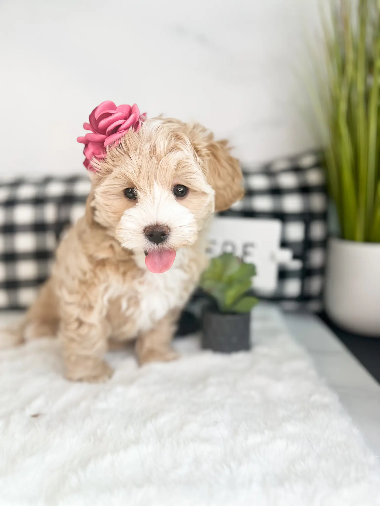
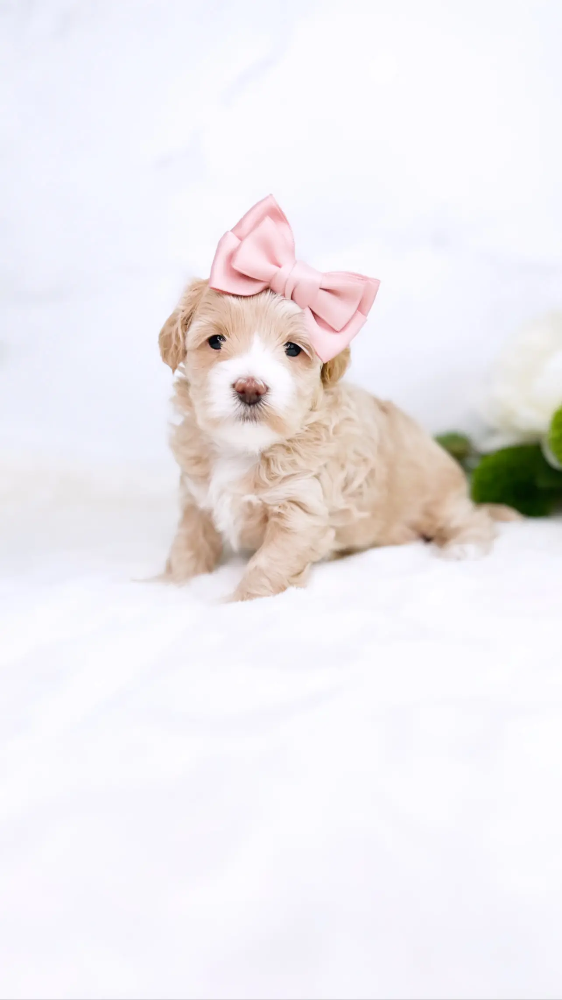
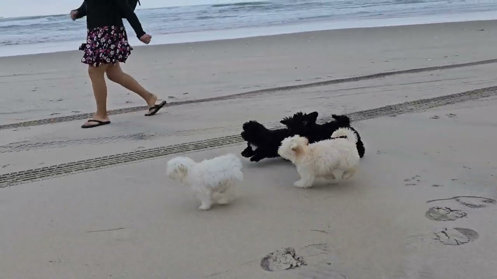
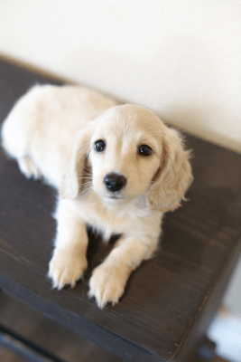
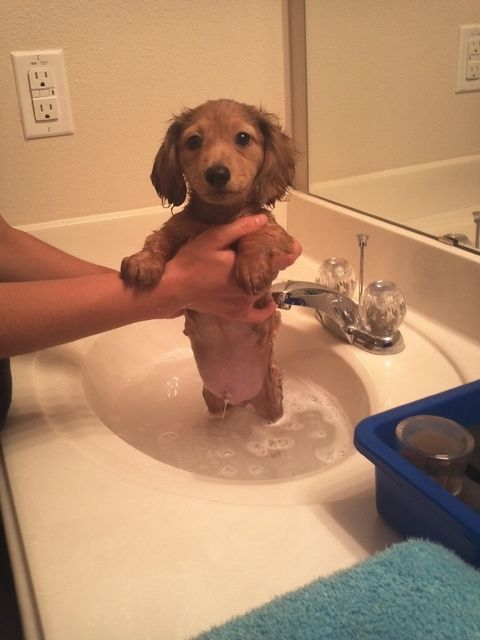

Pets
1. Bacon Q Dog

Bacon Q. Dog is a 9yr old labradoodle. He prefers to spend his days lounging among the three different beds/couches that his family has gifted him. He enjoys a walk or two around the neighborhood, as long as he can pretend that he doesn't see any of the other animals to avoid the embarrassment of not wanting to admit he has no wolf-like skills in chasing them.
At night just as the rest of the family is ready to relax, Bacon suddenly wants to release all of his energy. He will place his toys on a mini couch and frantically drag the couch around, giving his toys "a ride." There is also a lot of rolling. Lots and lots of rolling.
Photo Gallery


Likes
- Belly rubs
- Playing tug-of-war
- Sneaking onto the couch
2. Chewy
Chewy is a 3yr old maltipoo. She is a very sweet and loving dog. She loves to cuddle and give kisses. She is very playful and loves to play with her toys. She is very smart and knows how to sit, stay, and lay down. She is very friendly and loves to meet new people. She is very energetic and loves to run around. She is very curious and loves to explore. She is very loyal and loves to be around her family. She is very protective and will bark at strangers. She is very cute and loves to take pictures.
Photo Gallery
 Likes
- Playing with her toys
- Going on walks
- Playing with other dogs
3. Cookie
Cookie is a 5 month old golden dachshund puppy. He is very energetic and loves to play. He is very friendly and loves to meet new people. He is very curious and loves to explore. He is very smart and knows how to sit, stay, and lay down. He is very loyal and loves to be around her family. He is very protective and will bark at strangers. He is very cute and loves to take pictures.
Photo Gallery
Likes
- Taking long naps
- A nice and hot shower
- Lots of treats